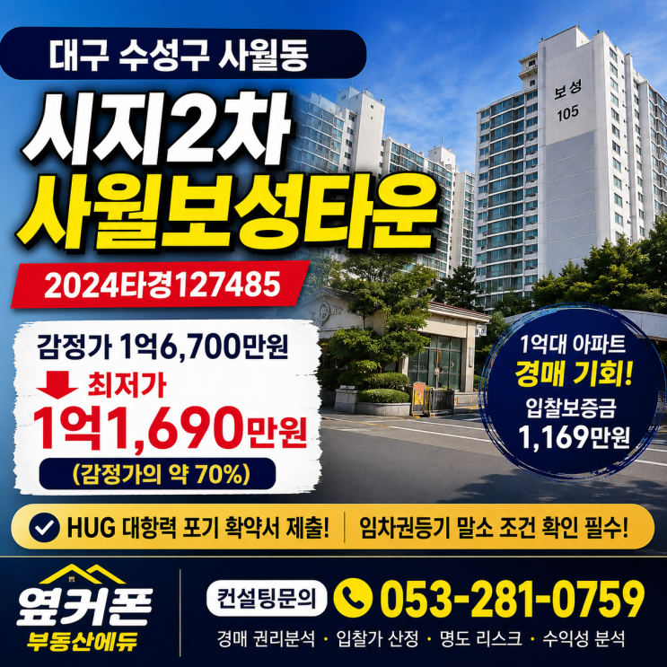
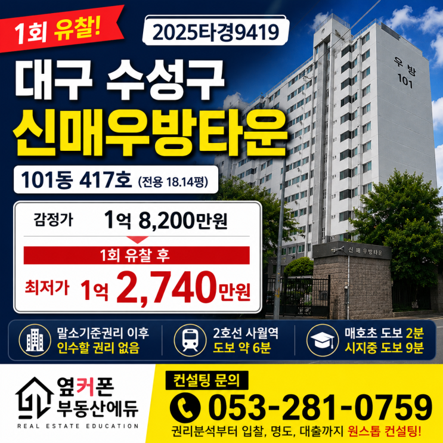
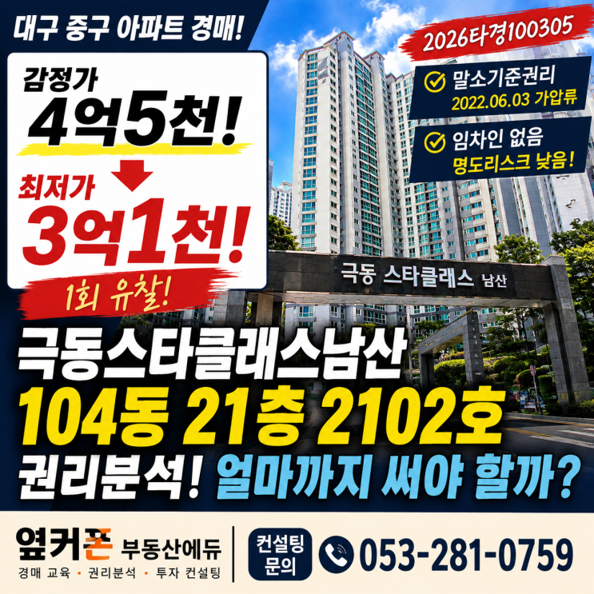
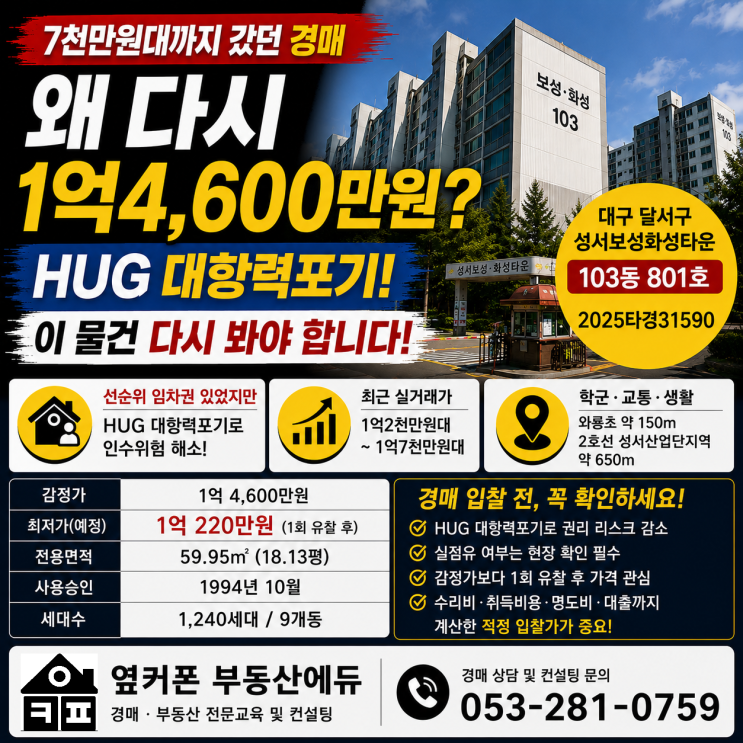
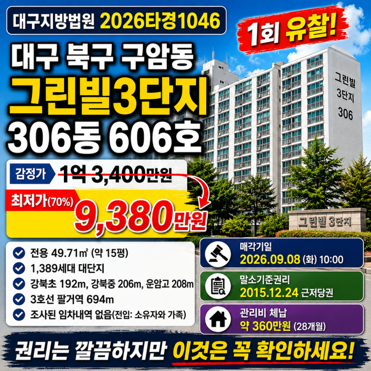
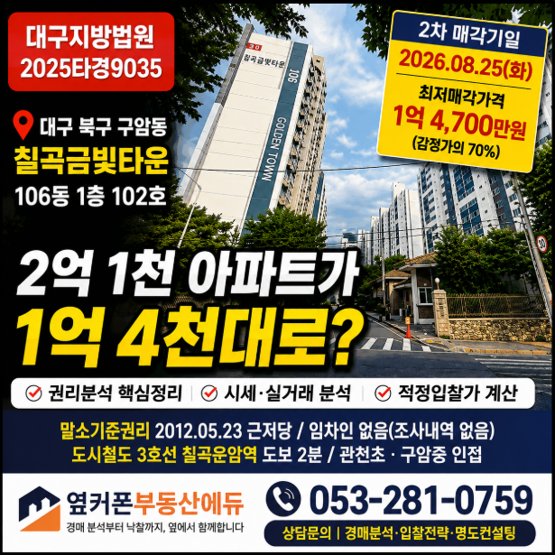
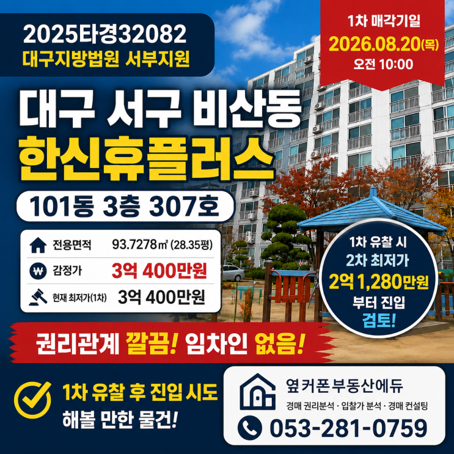

아파트 · 감정가의 70%
말이 아닌 낙찰 데이터로 증명합니다
광고 문구가 아니라 실제 낙찰 사례와 감정평가서, 심사필증으로 확인할 수 있는 데이터입니다. 직접 투자한 경험으로 입찰부터 운영까지 알려드립니다.
전국 경매물건
유찰로 가격이 낮아진 아파트부터 상가·토지·숙박시설까지, 옆커폰부동산에듀 물건정보 블로그의 최신 물건과 사진을 자동으로 불러옵니다.







감정평가서로 확인하는 자산가치
한국감정평가사협회 심사필증과 감정평가법인의 공식 감정평가서를 공개합니다. 말로만 설명하는 자산이 아니라 실제 문서로 확인할 수 있는 투자 경험입니다.
문서를 누르면 확대해서 확인할 수 있습니다.
YKPHONE ANALYSIS
싸 보이는 물건과 실제로 수익이 남는 물건은 다릅니다. 대표가 직접 최종 판단을 내릴 수 있도록 조사와 계산의 순서를 표준화했습니다.
대표에게 전화로 물어보기 →등기부, 임차인, 말소기준권리와 인수 가능성을 확인합니다.
실거래가와 현재 매물, 지역 수요를 함께 비교합니다.
취득비용과 대출을 반영해 실제 필요한 현금을 계산합니다.
현장 확인 후 출구전략에 맞는 적정 입찰선을 정합니다.
대출, 세금, 명도와 매도·운영 방향까지 피드백합니다.
3초 만에 내 과정 찾기
현재 경매 경험과 목표에 맞춰 가장 적합한 과정 하나만 추천해 드립니다. 세 문항을 누르면 바로 결과를 확인할 수 있습니다.
교육과 컨설팅 · 일반가
위에서 아래로 단계만 따라가도 과정의 차이가 보이도록 정리했습니다. 경매 경험과 투자 가능시간에 맞춰 필요한 단계부터 시작하세요. 모든 수강료는 부가세와 교재비가 포함된 금액입니다.
경매 입문 과정
실전 투자 준비 과정
오프라인·온라인 선택 과정
1:1 사후관리형 낙찰 집중 과정
전국 경매 밀착 컨설팅
초급반·중급반·고급반 수강료는 부가세 및 교재비 포함 기준입니다. 낙찰반·컨설팅의 선택 서비스, 세부 이용 조건과 성공보수 기준은 상담 후 계약서에서 확인해 주세요.
누적 낙찰금액
0억실제 낙찰 사례를 기반으로 축적한 데이터증빙자료로 확인하는 실전 경험
감정평가서와 심사필증, 실제 낙찰 사례를 공개합니다. 아파트 단기투자부터 숙박시설 운영까지 직접 경험한 판단 기준을 교육과 컨설팅에 반영합니다.
REAL RESULTS
수강생이 직접 전한 메시지와 법원 자료로 확인되는 낙찰 결과입니다. 사진을 누르면 크게 확인할 수 있습니다.
← 마우스를 올리면 잠시 멈춥니다 · 사진을 누르면 확대됩니다 →
경매 인사이트
공용부분과 전유부분의 구분부터 관리비 확인 요청까지 입찰 전 체크할 순서를 정리했습니다.
블로그에서 읽기 ↗실거래가, 현재 매물, 취득비용, 보유기간을 반영해 무리하지 않는 입찰선을 계산합니다.
블로그에서 읽기 ↗대출 가능금액과 명도기간까지 고려해 실제 입주 가능한 일정을 판단하는 방법입니다.
블로그에서 읽기 ↗전국 부동산 경매 컨설팅
사건번호나 물건 링크를 준비해 전화 또는 상담신청으로 보내주세요.